рабочий гайд к элементу 2 «контекст» программы S26: аудит жизни, инвентаризация поверхностей, чистка сохранёнок — чтобы агент получил профиль человека, а не догадки.
нужен на pre-lab и W1: там участник собирает входной документ и context layer, на который дальше встают состояние, агенты и форма.
карта гайда · порядок неслучаен
каждый следующий раздел нужен только тогда, когда предыдущий начал жать. строить всё сразу — самый дорогой способ бросить на середине.
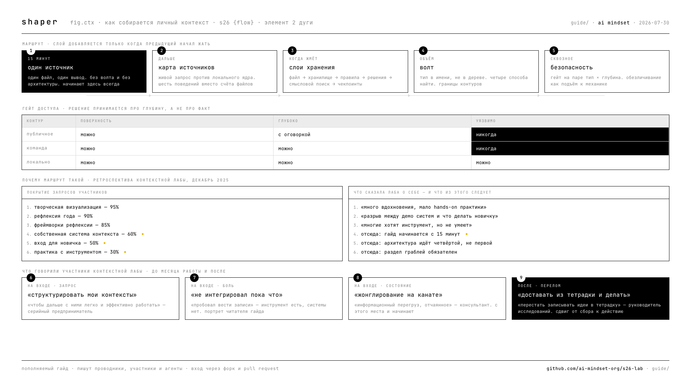
одно правило до всего остального
контекст, который лежит текстом, читается один раз на старте и дальше проигрывает вниманию. контекст, встроенный в момент действия, срабатывает независимо от того, помнишь ты о нём или нет. собирая контекст, спрашивай не «где это лежит», а «что произойдёт, когда это понадобится».
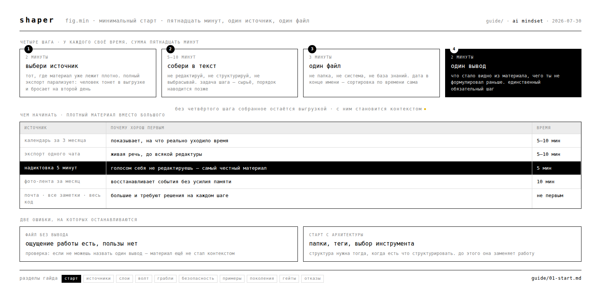
пятнадцать минут. один источник. один файл. без волта, без инструментов, без архитектуры.
этот раздел существует, потому что декабрьская лаба показала готовые системы и получила фрустрацию: разрыв между демо продвинутого контура и вопросом «а мне-то что делать» оказался непроходимым. поэтому здесь нет ничего, кроме первого шага.
полный экспорт кажется правильным началом: выгрузить всё, потом разобрать. на практике человек тонет в выгрузке и бросает на второй день. объём материала не помогает — он парализует.
один источник даёт обратное: через пятнадцать минут есть результат, который можно потрогать, и понимание, стоит ли продолжать.
бери тот, где материал уже накоплен и лежит плотно. хорошие первые источники:
| источник | почему хорош | сколько занимает |
|---|---|---|
| календарь за 3 месяца | показывает, на что реально уходило время | 5–10 мин |
| экспорт одного чата | живая речь, а не отредактированная | 5–10 мин |
| голосовая надиктовка 5 минут | самый честный материал (см. ниже) | 5 мин |
| фото-лента за месяц | восстанавливает события без усилия памяти | 10 мин |
плохие первые источники: почта, все заметки сразу, весь GitHub. они большие и требуют решений на каждом шаге.
выгрузи выбранное в текст. не редактируй, не структурируй, не выбрасывай. на этом шаге задача — получить сырьё, а не порядок.
про голос отдельно. текстом человек редактирует себя на лету: убирает неловкое, формулирует красивее, чем думает. голосом — нет. пять минут надиктовки дают больше настоящего материала, чем час письма. если сомневаешься, с чего начать, начни с голоса: включи запись и ответь вслух на три вопроса.
что занимало меня последние три месяца что я откладываю дольше всего что я делаю руками каждую неделю, хотя не должен
всё собранное — в один файл. один. не папка, не система, не база знаний.
назови его так, чтобы через полгода понять, что внутри, не открывая:
контекст источник-<какой> – ГГГГ-ММ-ДД.md
дата в конце — чтобы файлы сортировались по времени сами.
в конец файла допиши один абзац: что стало видно из этого материала, чего ты не формулировал раньше.
это единственный обязательный шаг. без него собранное остаётся выгрузкой. с ним оно становится контекстом.
через пятнадцать минут у тебя есть один файл с сырьём и одним выводом. этого достаточно, чтобы:
следующий слой добавляется только тогда, когда текущий начал мешать. пока один файл справляется — второго не нужно. когда файлов станет больше десятка и ты перестанешь помнить, где что, переходи к хранению слоями.
карта того, какие источники вообще бывают и в каком порядке их брать, — в карте источников.
собрать источник и не сделать шаг 4. файл лежит, ощущение работы есть, пользы нет. проверка простая: если ты не можешь назвать один вывод, материал ещё не стал контекстом.
вторая по частоте — начать с архитектуры. нарисовать структуру папок, придумать теги, выбрать инструмент, и на этом закончиться. структура нужна, когда есть что структурировать.
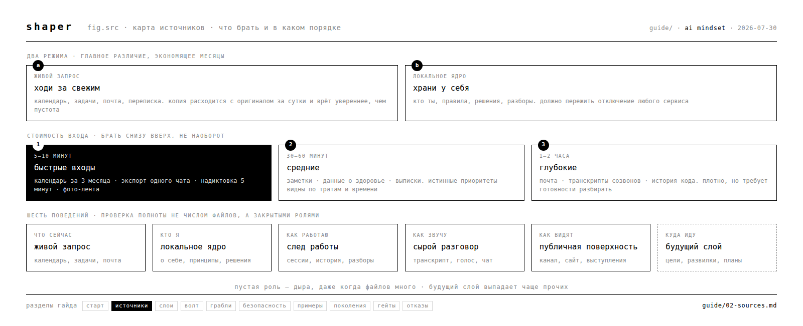
когда первый источник собран и вывод сделан, встаёт вопрос: что брать дальше и в каком порядке. этот раздел — карта, а не программа. пройти всё подряд не нужно и вредно.
главное различие, которое экономит месяцы.
живой запрос — источник, к которому ходишь за свежим каждый раз. календарь, задачи, почта, CRM, переписка. копию такого источника хранить не нужно: она расходится с оригиналом за сутки и начинает врать увереннее, чем отсутствие данных.
локальное ядро — то, что хранишь у себя и что должно пережить отключение любого сервиса. кто ты, твои правила, решения и почему они приняты, разборы, транскрипты.
частая ошибка — выгрузить календарь в заметки «чтобы всё было в одном месте». через неделю там прошлое, которое выглядит как настоящее.
| время | источник | что даёт |
|---|---|---|
| 5–10 мин | календарь · экспорт чата · голосовая надиктовка · фото-лента | быстрый результат, проверка интереса |
| 30–60 мин | заметки · данные о здоровье · банковские выписки | истинные приоритеты — по тратам и по времени видно то, что не совпадает с декларациями |
| 1–2 часа | почта · транскрипты созвонов · история кода | плотный материал, но требует готовности разбирать |
порядок — по возрастанию. брать глубокий источник первым значит увеличить шанс бросить.
не «сколько источников собрано», а какие роли закрыты. если роль пустая — это дыра, даже когда файлов много.
| поведение | что закрывает | примеры |
|---|---|---|
| живой запрос | что происходит сейчас | календарь, задачи, почта, переписка |
| локальное ядро | кто я и по каким правилам живу | о себе, принципы, решения |
| след работы | как я на самом деле работаю | сессии с агентом, история изменений, разборы |
| сырой разговор | как я звучу, а не как себя описываю | транскрипты, голос, групповые чаты |
| публичная поверхность | каким меня видят снаружи | канал, сайт, выступления |
| будущий слой | куда я иду | цели, открытые развилки, планы |
последняя строка выпадает чаще всего. контекст без будущего слоя описывает прошлое и не помогает принимать решения.
терапия, здоровье, отношения, деньги, семья — самый плотный материал и самый опасный.
рабочее правило: обезличить до отправки либо не отправлять. конкретно это значит — убрать имена, места, узнаваемые детали, оставить механику и паттерн. «разговор с N о переезде» превращается в «повторяющийся конфликт между обязательством и свободой перемещения».
то, что не поддаётся обезличиванию, остаётся локально и в облако не идёт. это не паранойя, а условие честности: контекст, который страшно отдать, отдаётся выборочно — и тогда система работает с тем, что есть, а не с искажённым.
честный ответ: устойчивого критерия нет, и это открытое место гайда.
рабочая проверка на сегодня — задай агенту вопрос, который требует знания тебя, и посмотри, промахнётся ли он. если ответ общий, не хватает локального ядра. если ответ устарел, не хватает живого запроса. если ответ вежливый и обтекаемый, не хватает сырого разговора.
собирать «на всякий случай» — способ не начать работать. контекст собирается под задачу.
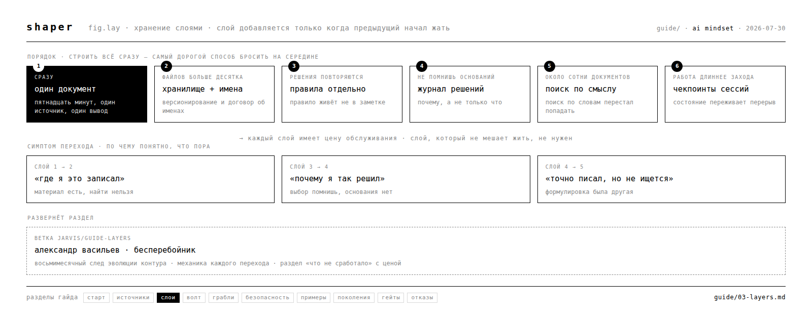
раздел для момента, когда одного файла перестало хватать. шесть слоёв, симптом перехода к каждому, цена обслуживания.
всё ниже снято с системы, которая живёт с октября 2025 по сегодня.
слой добавляется, когда предыдущий начал мешать. пока текущий справляется, следующий добавляет обслуживание и ничего не даёт.
строить архитектуру заранее дорого по одной причине: усилие уходит в инфраструктуру, которая ещё ничего не держит, результат не появляется достаточно быстро, и работа бросается на середине.
| # | слой | симптом перехода | цена обслуживания |
|---|---|---|---|
| 1 | один документ | — | нулевая |
| 2 | хранилище с договором об именах | файлов больше десятка, перестал находить своё | договор надо соблюдать |
| 3 | правила отдельно от заметок | одно решение принимается заново третий раз | правила устаревают молча |
| 4 | решения с записью «почему» | вернулся к выбору и не помнишь оснований | минута на решение |
| 5 | поиск по смыслу | около пятисот документов, поиск по словам мимо | индекс надо пересобирать |
| 6 | чекпоинты сессий | работа длиннее одного захода, между заходами теряется | снимок в конце каждой сессии |
симптом. ищешь свой же файл дольше минуты.
механика описана в разделе волт: тип живёт в имени файла, дата в конце, имя латиницей.
что происходит с предыдущим слоем. первый файл никуда не девается: получает имя по договору и становится первым документом хранилища. содержание переписывать не нужно.
симптом. одно и то же решение принимается заново третий раз, и каждый раз чуть иначе. прошлое решение лежит в заметке, а заметка читается один раз.
критерий один: правило описывает будущее поведение и имеет момент срабатывания. заметка описывает произошедшее.
| это правило | это заметка |
|---|---|
| «семь часов сна минимум, стоп в двадцать три ноль-ноль» | «в июне спал мало, к концу месяца сел» |
| «перед отправкой третьему лицу сверить адресата» | «отправил письмо не тому человеку» |
| «имя файла латиницей» | «кириллица в имени сломала синхронизацию» |
заметка про сломанную синхронизацию порождает правило про латиницу. одна остаётся историей, второе начинает работать.
практическая проверка. у правила есть триггер — момент, когда оно срабатывает. «больше отдыхать» условия не содержит и проверке не поддаётся. «стоп в двадцать три ноль-ноль» содержит время и действие.
спорный случай разрешается вопросом: что произойдёт, если это нарушить. есть ответ — правило. нет ответа — заметка.
наблюдение с восьмимесячной дистанции. пять принципов, собранных в декабре 2025, за это время не изменились ни разу. цели того же года переписаны полностью. принципы описывают поведение и переживают смену планов; цели описывают планы и меняются вместе с ними.
цена: правило устаревает молча. пересматривать список стоит тогда, когда ловишь себя на регулярном его нарушении.
симптом. возвращаешься к старому выбору, помнишь результат, оснований не помнишь. дальше выбор либо переоткрывается с нуля, либо защищается по инерции.
ни файл на решение, ни сплошной журнал. запись с фиксированными полями, лежащая в базе, откуда её достаёт поиск:
что выбрано
какие были альтернативы и почему отклонены
чем подтверждено — коммит, файл, задача
последствия, включая неприятные
при каких условиях пересматривать
последнее поле оказалось самым полезным и самым неочевидным. решение с записанным условием пересмотра перестаёт быть догмой: видно, когда оно истекло.
минимальная версия без базы: один файл на месяц, запись в пять строк по тому же шаблону, обычный текстовый поиск. работает до нескольких сотен записей.
цифра. 2306 таких записей за восемь месяцев. ответ на вопрос «почему мы это выбрали» подешевел с получаса раскопок до одного запроса.
через три месяца «почему» стоит дороже, чем «что»: результат виден в файлах, основания не видны нигде.
симптом. документов несколько сотен, поиск по словам перестаёт находить: помнишь суть, а слово из заголовка не воспроизводится.
замер перехода. счёт документов по месяцам на этой системе: 28 в начале декабря → 188 к январю → 387 к марту → 532 к концу марта, когда поиск по смыслу и появился. сегодня около полутора тысяч в отслеживаемом дереве.
что было триггером. конкретный случай, зафиксированный отдельным разбором: шесть последовательных текстовых поисков не нашли ничего, один смысловой запрос нашёл сразу. до этого момента переход откладывался как преждевременный.
порядок, который экономит неделю. сначала обычный полнотекстовый поиск с синонимами. индекс по смыслу оправдан тогда, когда массив размечен и текстовый поиск честно перестал справляться. обратный порядок стоит нескольких дней, потраченных на инфраструктуру, которая пока ничего не улучшает.
цена: индекс отстаёт от файлов и требует пересборки. отстающий индекс отвечает уверенно и неверно — это хуже его отсутствия.
симптом. работа идёт длиннее одного захода, и каждый следующий начинается с восстановления контекста.
механика. в конце захода пишется снимок: что сделано, что осталось открытым, где лежат артефакты. следующий заход начинается с чтения снимка.
цифра. 230 снимков за восемь месяцев. они же оказались единственным способом восстановить хронологию: содержание файлов показывает состояние, снимки показывают движение.
слои построены, а правила продолжают нарушаться — вопрос переходит из области хранения в область срабатывания: механика срабатывания.
что на этих слоях ломалось и сколько стоило — что не сработало.
опыт по любому пункту ценнее ещё одного раздела от авторов — как добавить.
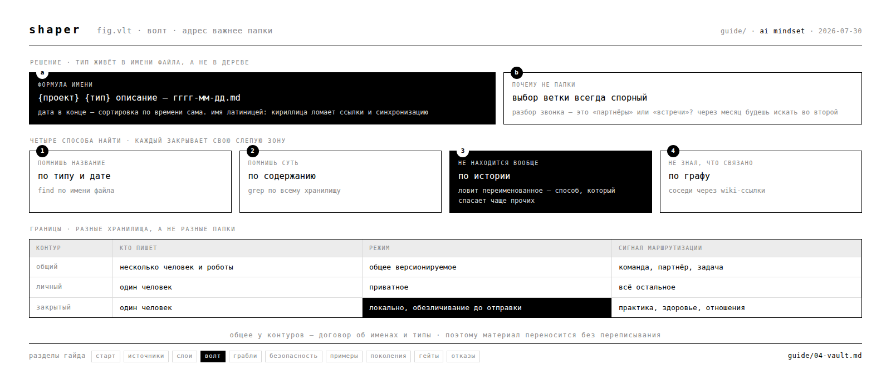
раздел для того момента, когда файлов стало много и ты перестал находить своё. декабрьская лаба показала, что это самое узкое место: практику работы с волтом просили почти все, а покрытие оказалось тридцать процентов.
всё ниже снято с работающей системы, а не придумано. команды, которыми получены цифры, приведены рядом — их можно повторить на своей.
тип живёт в имени файла, а не в дереве папок:
{проект} {тип} описание – ГГГГ-ММ-ДД.md
дата в конце — файлы сортируются по времени сами. имя латиницей, содержание на любом языке: кириллица в имени ломает часть инструментов, ссылок и синхронизации.
почему не папки. папка вынуждает выбрать одну ветку дерева, и выбор почти всегда спорный: разбор звонка с партнёром — это партнёры или встречи? через месяц ты будешь искать во второй, потому что помнишь про звонок, а не про партнёра.
тип снимает вопрос. файл называется {transcript}, лежит там, где удобно, находится поиском по типу.
следствие: новые папки почти никогда не нужны. существующие плюс тип плюс связи между файлами покрывают то, ради чего люди заводят дерево.
личный волт, снято find по именам файлов:
45 527 файлов .md · 79 406 прочих файлов · 21 ГБ
{transcript} 9548 · {krisp} 6987 · {strategy} 2949
{article} 1038 · {daily-focus} 719 · {analysis} 470
{handoff} 419 · {rule} 309 · {guide} 215
вторая строка важнее первой: не-текстовых файлов почти вдвое больше, чем текстовых. волт перестаёт быть заметочником незаметно, и вес приходит именно оттуда.
типы заводятся не заранее, а по факту: когда одна и та же сущность появилась в третий раз, у неё появляется тип.
каждый закрывает свою слепую зону. большинство знает первые два.
| способ | ловит | чем |
|---|---|---|
| по типу и дате | то, про что помнишь название | find . -name "*{transcript}*2026-07*" |
| по содержанию | то, про что помнишь только суть | grep -ril "фраза" . |
| по истории | переименованное | git log --diff-filter=A --name-only --since=... |
| по связям | соседей, о которых не знал | граф [[wiki-ссылок]] в Obsidian |
третий способ спасает чаще остальных, и его почти никто не использует. ты ищешь файл по старому названию, не находишь и решаешь, что его нет. история помнит, когда файл появился и как назывался тогда.
это единственный довод в пользу версионирования, который чувствуется на своей шкуре: не «бэкап», а поиск по прошлому.
когда контекст перестаёт быть только личным, встаёт вопрос разделения. рабочее решение — разные хранилища, а не разные папки.
пока команда живёт папкой внутри личного пространства:
три контура вместо одного:
| контур | кто пишет | режим |
|---|---|---|
| общий | несколько человек и роботы | общее версионируемое хранилище |
| личный | один человек | приватное хранилище |
| закрытый | один человек | локально, обезличивание до отправки |
маршрутизация по сигналу, а не по ощущению. упоминание команды, партнёра, задачи — общий контур. личная практика, здоровье, отношения — закрытый. остальное — личный. при сомнении вопрос задаётся вслух.
общее у контуров одно — договор об именах и типы. поэтому материал переносится между ними без переписывания: меняется адрес, не формат.
опыт по любому из пунктов ценнее ещё одного раздела от авторов — как добавить.
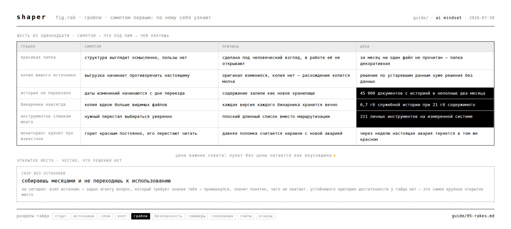
без этого раздела гайд был бы рекламой. каждый пункт — симптом, настоящая причина и цена. симптом стоит первым: по нему себя узнают.
прочитать стоит заранее, вернуться — когда заболит.
симптом. структура выглядит осмысленно, ощущение порядка есть, пользы нет.
причина. папка сделана для человеческого взгляда, а не для чтения. ни один файл из неё не открывается в работе.
проверка. если за месяц ни один файл из папки не был прочитан ни разу — папка декоративная. удалить или свести в один рабочий файл.
симптом. выгруженный календарь или список задач начинает противоречить настоящему, и ты доверяешь копии.
причина. живой источник изменился, копия — нет. расхождение накапливается молча.
цена. решение, принятое по устаревшим данным, хуже решения, принятого без данных: во втором случае ты хотя бы осторожен.
симптом. обнаруживаешь, что личный материал ушёл в сервис, и начинаешь отдавать системе меньше — она глупеет.
причина. нет привычки обезличивать до отправки, поэтому выбор бинарный: всё или ничего.
решение. убрать имена и узнаваемые детали, оставить механику. то, что не обезличивается, остаётся локально.
симптом. через полгода после смены машины замечаешь, что даты изменений начинаются с дня переезда, а всё, что было до, — один снимок.
причина. при переносе содержание залили как новое хранилище. содержание живо, эволюция — нет.
цена. если контекст ценен именно ростом — «когда я это понял, что было до», — ответа больше нет.
решение. решать про историю до переезда. либо переносить хранилище целиком, либо принять чистый снимок и хотя бы зафиксировать дату разрыва отдельной записью.
реальный случай: личное хранилище с сорока пятью тысячами документов имеет историю глубиной в неполные два месяца — всё предыдущее существует как содержание без дат.
симптом. копия хранилища занимает вдвое больше, чем видимые файлы, и качается всё дольше.
причина. система версий хранит каждую версию каждого бинарника вечно. удаление файла историю не уменьшает.
цена. измеренная: 6,7 ГБ служебной истории при 21 ГБ содержимого. платит каждая новая машина и каждая копия.
решение. рендеры, сборки и медиа не живут вместе с текстом. исходники читаются из хранилища, результат складывается отдельно.
симптом. программа не может прочитать файл, который прекрасно открывается руками. ошибка выглядит как повреждение данных.
причина. на macOS папки вроде Documents защищены механизмом приватности, и фоновый процесс получает отказ, хотя пользователь доступ имеет.
решение. рабочие данные автоматизации держать вне защищённых папок. на отказ доступа реагировать как на запрет, а не как на порчу.
симптом. ссылки рвутся, синхронизация ведёт себя странно, часть инструментов файл не видит.
решение. имя латиницей, содержание на любом языке. правило вводится только вперёд: старое не переименовывают, иначе рвутся все существующие ссылки.
симптом. человек уверенно описывает стройный контур, а в файлах россыпь.
причина. описание системы приятнее её сборки, и память достраивает намерения до фактов.
проверка. доказательство — файлы, типы и связи. не пересказ. это относится и к собственной системе: спроси себя, где лежит то, о чём ты только что рассказал.
симптом. набор расширений и навыков вырос, и нужный перестаёт выбираться уверенно.
цифра. на измеренной системе — 211 личных инструментов, что заметно выше порога уверенного выбора.
решение. маршрутизация: один вход, который раздаёт, вместо длинного плоского списка.
симптом. мониторинг горит красным постоянно, и его перестают читать.
причина. давняя известная поломка считается наравне с новой аварией.
цена. через неделю пропускается настоящая авария — она теряется в том же красном.
решение. разделять «чинится сегодня» и «известный долг». второе показывать, но не давать ему портить общий вердикт.
симптом. собираешь месяцами и никогда не переходишь к использованию.
причина. критерия достаточности нет, а сбор ощущается как работа.
решение на сегодня. контекст собирается под задачу. взял источник — задал агенту вопрос, который требует знания тебя, — посмотрел, промахнулся ли он. промахнулся — понятно, чего не хватает. попал — собирать дальше пока не нужно.
честно: устойчивого критерия остановки у гайда нет, это открытое место.
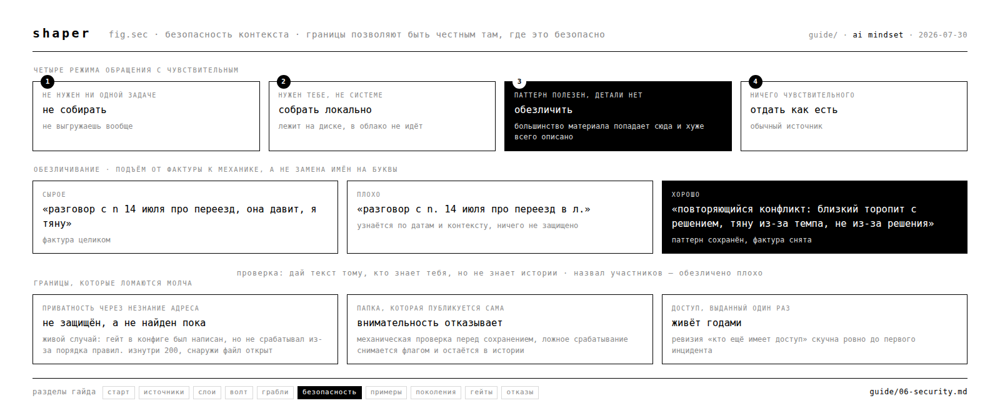
контекст о себе — самый плотный материал, который у тебя есть, и самый опасный. этот раздел про то, как отдать системе достаточно, чтобы она помогала, и не отдать лишнего.
тезис, вокруг которого всё строится: безопасность контекста это не про паранойю, а про качество работы. человек, который боится за свои данные, отдаёт системе выхолощенную версию себя — и получает выхолощенные ответы. правильно устроенные границы позволяют быть честным там, где это безопасно.
частая ошибка — думать о доступе как о списке людей: этому можно, тому нельзя. на личном контексте это не работает, потому что один и тот же человек в разных ролях видит разное.
рабочая модель — гейт назначается паре «тип × глубина», а не персоне.
глубина
поверхность → глубоко → уязвимо
┌──────────────────────────────────┐
публичное │ ✓ · ✗ │
команда │ ✓ ✓ ✗ │
пара │ ✓ ✓ · │
локально │ ✓ ✓ ✓ │
└──────────────────────────────────┘
✓ можно · с оговоркой ✗ никогда
пример на одном факте. «я работаю над лабораторией в августе» — поверхность, идёт в публичное. «мне тяжело держать ритм, когда параллельно идут три проекта» — глубоко, идёт в команду. «за этим стоит страх, что если я остановлюсь, всё развалится» — уязвимо, остаётся локально.
это один и тот же факт на трёх глубинах. решение принимается не про факт, а про глубину.
| режим | когда | что делаешь |
|---|---|---|
| не собирать | материал не нужен ни одной задаче | не выгружаешь вообще |
| собрать локально | нужен тебе, но не системе | лежит на диске, в облако не идёт |
| обезличить | паттерн полезен, детали нет | убираешь имена, места, узнаваемое |
| отдать как есть | ничего чувствительного | обычный источник |
большинство материала попадает в третий режим, и он же хуже всего описан в популярных гайдах.
обезличивание — не замена имён на буквы. это подъём на уровень выше от конкретики к механике.
сырое → «разговор с Мариной 14 июля про переезд в Лиссабон,
она давит, я тяну»
плохо → «разговор с М. 14 июля про переезд в Л.»
(узнаётся по датам и контексту, ничего не защищено)
хорошо → «повторяющийся конфликт: близкий человек торопит
с решением о переезде, я тяну — не из-за самого
решения, а из-за темпа»
во втором варианте потеряны имя, дата и место, а сохранено то единственное, ради чего материал вообще нужен: паттерн. система работает с паттерном, а не с фактурой.
проверка качества обезличивания: дай текст человеку, который знает тебя, но не знает этой истории. если он назовёт участников — обезличено плохо.
материал, где паттерн неотделим от фактуры: медицинские детали, финансовые суммы с привязкой, содержание терапии, чужие тайны. упоминание типа источника — можно, содержание — нет.
«есть регулярная работа с психотерапевтом, материал оттуда в систему не идёт» — нормальная строка в контексте. она сообщает системе о существовании слоя, не открывая его.
три механизма, которые выглядят безопасно и не являются таковыми.
сервис, доступный по «секретной» ссылке или на адресе, который никто не угадает, — не защищён. он просто не найден пока.
типовой отказ, на который наступают почти все: внутренний сервис отдаёт файл с персональными данными в открытый интернет, хотя ограничение по адресу в конфиге написано. причина в порядке обработки правил веб-сервером — проверка стоит в файле выше, а выполняется позже раздачи. изнутри сервис отвечает правильно, снаружи файл открывается целиком.
вывод, который стоит унести: проверка изнутри не доказывает ничего. единственная валидная приёмка — попытка достучаться снаружи, с машины вне контура.
если в проекте есть каталог, который раздаётся публично автоматически, то единственной защитой остаётся внимательность автора. внимательность отказывает.
механическое решение: проверка перед сохранением, которая ищет в добавляемых файлах внутренние адреса, ключи, признаки личного, и останавливает сохранение. ложное срабатывание снимается явным флагом, и этот флаг остаётся в истории — то есть решение «публикуем осознанно» задокументировано, а не исчезло вместе с окном терминала.
права на хранилище, ключ к сервису, приглашение в чат — выдаются за минуту и живут годами. периодическая ревизия «кто ещё имеет доступ» скучна ровно до первого инцидента.
честная картинка, без запугивания и без благодушия.
отправленное во внешний сервис покидает твою машину. дальше действуют политики сервиса: срок хранения, использование для обучения, доступ сотрудников, юрисдикция. эти политики меняются, и меняются без твоего участия.
практические следствия:
это не довод против облака. это довод за сортировку: уязвимое обезличивается до отправки, остальное идёт как есть.
минимум, который не должен зависеть ни от одного внешнего сервиса:
ключи в контексте — отдельная грабля. файл с описанием рабочего контура естественным образом притягивает строки вида «токен лежит там-то». хранилище ключей операционной системы существует ровно для этого; в контексте остаётся ссылка на имя записи, не значение.
шесть вопросов, тридцать секунд:
шестой вопрос — единственный, который ловит то, что пропустили первые пять.
опыт по любому пункту нужнее ещё одного раздела от авторов — как добавить.
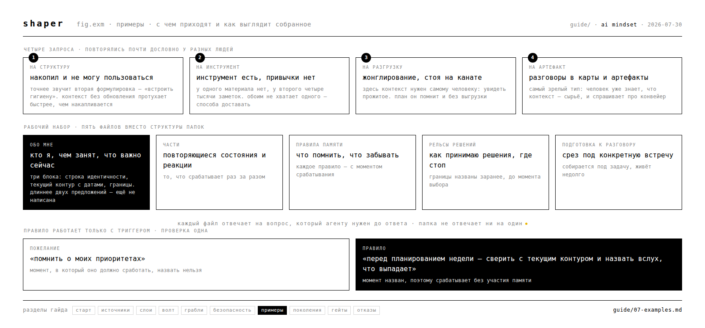
абстрактный гайд легко читать и невозможно применить. здесь — как контекст выглядел у реальных людей: с чем приходили, что делали, что получилось.
материал взят из контекстной лаборатории AI Mindset, четыре сессии, 8–21 декабря 2025, и из выходных интервью зимней лаборатории, февраль 2026. цитаты приведены по роли, без имён — публикация с именем требует отдельного согласия участника.
четыре типа запроса, которые повторялись почти дословно у разных людей.
запрос на структуру. человек накопил материал и не может им пользоваться.
«хочу фреймворк или систему, которая поможет структурировать мои контексты, чтобы дальше с ними легко и эффективно работать» — серийный предприниматель
«пересобрать разрозненные материалы в одну структуру и встроить гигиену, чтобы контекст оставался актуальным» — руководитель в финансовых технологиях
вторая формулировка точнее первой. гигиена — то, о чём почти никто не думает на старте: контекст без обновления протухает быстрее, чем накапливается.
запрос на инструмент. есть инструмент, нет привычки.
«пробовал вести записи — не интегрировал пока что» — участник, технический руководитель
«более четырёх тысяч заметок... хочу уверенность, что мой стек это действительно что-то типа экзоскелета» — участник с большим архивом
две крайности одной проблемы: у первого материала нет, у второго его слишком много. обоим не хватает одного и того же — способа доставать.
запрос на разгрузку.
«информационный перегруз, отчаянное жонглирование, стоя на канате» — консультант
«скорости и плотность событий были такие высокие, что я не успевала осознавать и проживать свой опыт» — консультант по культуре
здесь контекст нужен не агенту, а самому человеку: чтобы увидеть прожитое, а не вспомнить план.
запрос на артефакт.
«переводить коллективные подкасты и регулярные разговоры в артефакты и карты» — социальный дизайнер
самый зрелый тип: человек уже знает, что контекст — сырьё, и спрашивает про конвейер.
четыре приёма, каждый занимал часть одной сессии.
участники в парах восстанавливали прожитый год вслух. один говорит, второй задаёт вопросы и записывает.
работает по той же причине, что и надиктовка: проговаривание вслух другому человеку обходит внутреннего редактора. в одиночку восстанавливается план, вдвоём — то, что было.
обратная связь по этому приёму почти единодушная: времени мало. участники отмечали, что «казалось, минут пять», хотя шло дольше.
рефлексия по уровням от окружения к смыслу: где я нахожусь, что делаю, что умею, во что верю, кто я, ради чего.
даёт то, чего не даёт хронологический сбор: материал раскладывается по глубине. это же деление потом работает как гейт доступа — верхние уровни публичны, нижние остаются локально.
на сессиях использовались две: «намывание золота» и «алхимия контекста». первая про отбор из объёма, вторая про превращение сырья в рабочее.
честная оценка из ретроспективы лабы: метафора вдохновляет, но не заменяет механику. покрытие запроса на собственную систему составило 60% именно потому, что метафор было больше, чем шагов.
ведущий показывал свой рабочий контур: текстовые файлы, редактор, агенты.
здесь же нашлась главная ошибка формата. из ретроспективы:
«разрыв между демо продвинутых систем и что делать новичку. участники отмечали фрустрацию»
демонстрация зрелой системы человеку без системы демотивирует: расстояние выглядит непроходимым. поэтому в этом гайде демонстрация идёт четвёртым разделом, а первым — пятнадцать минут и один файл.
минимальный рабочий набор — пять файлов, не папка. они названы так, чтобы агент находил их по имени.
контекст обо-мне – 2026-07-30.md кто я, чем занят, что важно сейчас
контекст части – 2026-07-30.md повторяющиеся состояния и реакции
контекст правила-памяти – 2026-07-30.md что помнить, что забывать, что не хранить
контекст рельсы-решений – 2026-07-30.md как я принимаю решения, где стоп
контекст подготовка-к-разговору – ...md срез под конкретную встречу
почему пять, а не структура папок. каждый файл отвечает на вопрос, который агенту нужен перед ответом. папка не отвечает ни на один.
не биография. три блока:
одна строка идентичности — что система должна знать до первого ответа
текущий контур — над чем идёт работа прямо сейчас, с датами
границы — чего не делать, о чём не спрашивать, что не хранить
строка идентичности — самое трудное и самое полезное упражнение. если она длиннее двух предложений, она ещё не написана.
правило работает, только если у него есть триггер — момент, в который оно срабатывает.
плохо «помнить о моих приоритетах»
хорошо «перед планированием недели — сверить с текущим контуром,
назвать вслух, что выпадает»
плохо «не хранить лишнее»
хорошо «материал из закрытого контура не попадает в файлы контекста
ни в каком виде, включая пересказ»
проверка правила одна: можно ли назвать момент, когда оно должно сработать. если нельзя — это пожелание.
из выходных интервью зимней лаборатории. семь разговоров по двадцать пять минут, февраль 2026.
перелом, о котором говорили чаще другого, — сдвиг от накопления к использованию:
«перестать записывать идеи в тетрадку, начать их доставать из тетрадки и делать» — руководитель исследовательских проектов
та же участница о результате:
«неожиданно всё стало очень хорошо, и это до сих пор меня пугает»
вторая фраза важнее первой. страх перед работающей системой — нормальная реакция, и участнику стоит знать о ней заранее: она означает, что система начала менять решения, а не украшать их.
отдельно стоит отметить обратный эффект, о котором говорили те, кто пришёл с большим стеком:
«AI очень активно ворвался в работу и жизнь, но это создало ещё больше нагрузки» — руководитель цифрового консалтинга
инструмент без контекста добавляет работу. это тот случай, ради которого гайд и написан.
если у тебя есть любой из трёх — он ценнее ещё одного раздела от авторов, как добавить.
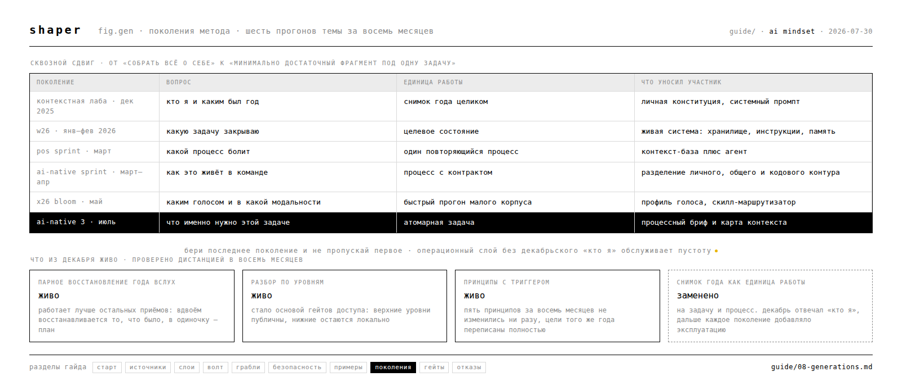
раздел для двух случаев: ты нашёл материалы прошлого потока и хочешь понять, актуальны ли они, либо тебе нужно объяснение, почему гайд устроен именно так.
за восемь месяцев AI Mindset прогнали тему контекста шесть раз, и каждый раз метод смещался. материалы всех шести лежат в открытом доступе, поэтому попасть на предыдущее поколение легко.
источник раздела — сплошное чтение архивов: контекстная лаборатория (декабрь 2025), W26 (97 файлов), X26 Bloom (78), AI-Native Sprint вместе с AI-Native 2 (214), AI-Native 3 вместе с POS Sprint (72).
от «собрать всё о себе» к «минимально достаточный фрагмент под одну задачу».
декабрь отвечал на вопрос «кто я». дальше каждое поколение добавляло эксплуатацию: отобрать под задачу, держать актуальным, отдать агенту, превратить в действие. к июлю формулировка стала жёсткой: контекст — минимально достаточный фрагмент данных, правил и ограничений для одной конкретной задачи. лишний материал ухудшает ответ.
практический вывод для читателя: бери последнее поколение и не пропускай первое. операционный слой без декабрьского «кто я» обслуживает пустоту.
| поколение | вопрос | единица работы | что уносил участник |
|---|---|---|---|
| контекстная лаба · дек 2025 | кто я и каким был год | снимок года целиком | личная конституция, системный промпт |
| W26 · янв–фев 2026 | какую задачу закрываю | целевое состояние | живая система: хранилище, инструкции, память |
| POS Sprint · март | какой процесс болит | один повторяющийся процесс | контекст-база плюс агент |
| AI-Native Sprint · март–апр | как это живёт в команде | процесс с контрактом | разделение личного, общего и кодового контура |
| X26 Bloom · май | каким голосом и в какой модальности | быстрый прогон малого корпуса | профиль голоса, скилл-маршрутизатор |
| AI-Native 3 · июль | что именно нужно этой задаче | атомарная задача | процессный бриф и карта контекста |
приёмы разобраны в примерах. сюда из декабря переходит одно наблюдение с дистанции: принципы переживают смену планов, цели меняются вместе с ними. пять принципов, собранных в декабре, за восемь месяцев не изменились ни разу; цели того же года переписаны полностью.
честная деталь из архива: заявленный на четвёртую сессию артефакт по метрикам и корреляциям участниками не создавался — сессию заняли другие практики. запрос на метрики жизни закрылся на сорок процентов, и это до сих пор самое слабое место темы.
главный вклад — рабочий цикл, который применим сразу:
целевое состояние → что неизвестно → какой контекст это закрывает → сбор → промпт → итерация.
задача идёт первой, данные вторыми. отсюда же два приёма, которые дают эффект в первый день:
там же появилась матрица важность × частота обновления: она решает, что живёт в ядре, а что подтягивается по запросу.
сдвиг входа: сборка начинается с боли, не с данных. «автоматизировать маркетинг» — направление; атомарная задача — то, что человек делает за один присест.
добавленная механика:
грабля оттуда же: чужой скилл не становится качественным от авторитета автора. качество выясняется на твоих задачах.
поколение про то, что происходит, когда контекст перестаёт быть личным.
ретроспективная оценка участников: поток был самым хаотичным из пройденных, и этот хаос помог части группы выйти из аналитического паралича к неотполированному, но готовому результату.
последнее поколение довело вход до процедуры:
там же зафиксировано деление материала по обработке: сырое · нормализованное · производное, подготовленное под конкретную работу агента.
ограничение оттуда же: длинные сессии без правил закрытия смешивают темы и раздувают контекст. рабочее ограничение — одна задача на сессию.
| приём | статус |
|---|---|
| парное восстановление года вслух | живо, работает лучше остальных приёмов |
| разбор по уровням от окружения к смыслу | живо, стало основой гейтов доступа |
| голос как первичный ввод | живо, усилено разметкой смысловых единиц |
| принципы с триггером | живо, восемь месяцев без изменений |
| снимок года целиком как единица работы | заменено на задачу и процесс |
| разовый экспорт источников | дополнено живым запросом к сервисам |
| метафоры фильтрации | сохранены как язык, механика прописана отдельно |
опыт по любому пункту ценнее ещё одного раздела от авторов — как добавить.
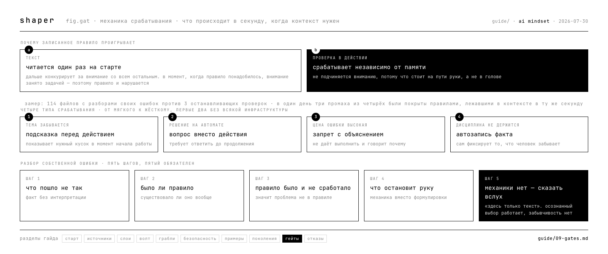
раздел для момента, когда правила уже записаны и продолжают нарушаться.
в остальных разделах речь про то, где контекст лежит. здесь — про то, что происходит в секунду, когда он нужен.
механика. текст читается один раз на старте работы и дальше конкурирует за внимание со всем остальным. в момент, когда правило понадобилось, внимание занято задачей — именно поэтому правило и нарушается.
проверка, встроенная в действие, срабатывает независимо от того, помнишь ты о ней.
цифра, снятая при разборе 29 июля 2026. в системе накоплено 114 файлов с разборами собственных ошибок против 3 проверок, физически останавливающих действие. в тот же день произошло четыре промаха, и три из четырёх были покрыты правилами, которые лежали в контексте в ту же секунду. правила прочитаны, приняты и не сработали.
это не про дисциплину. текст такого класса ошибок не закрывает в принципе.
в тот же день добавлено шесть останавливающих проверок. разборы остались на месте: они объясняют, почему проверка стоит там, где стоит.
от мягкого к жёсткому. первые два доступны без всякой инфраструктуры.
| тип | что делает | когда уместен |
|---|---|---|
| подсказка перед действием | показывает нужный кусок контекста в момент начала работы | тема повторяется, а материал забывается |
| вопрос вместо действия | требует ответить на один вопрос до продолжения | решение принимается на автомате и часто неверно |
| запрет с объяснением | не даёт выполнить действие и говорит почему | цена ошибки высокая, откат дорогой |
| автозапись факта | сам фиксирует то, что человек забывает записать | материал ценный, а дисциплина записи не держится |
без агента первые два делаются календарём, шаблоном заметки и чек-листом, который лежит в том же файле, где идёт работа. пример: перед отправкой письма открывается заметка с тремя вопросами. это уже гейт.
с агентом к ним добавляются два последних: проверка на входе в задачу и запись результата на выходе.
вопрос, который стоит задавать при каждом новом правиле:
что произойдёт в момент, когда это понадобится
если ответ «я вспомню» — правило останется текстом и однажды не сработает. если ответ «меня остановит вот эта проверка» — правило имеет механику.
порядок для разбора собственной ошибки:
пятый пункт обязателен. осознанный выбор оставить текстом работает; забывчивость нет.
ложные срабатывания убивают гейт за неделю. проверка, которая мешает в девяти случаях из десяти, отключается — и вместе с ней перестаёт работать десятый, ради которого её ставили.
гейт на редкое действие не окупается. если действие случается раз в квартал, дешевле пункт в чек-листе.
проверка, которая всегда зелёная, ничего не проверяет. отдельный класс отказа: она отрабатывает на пустом входе и возвращает успех. цена измерена — за один день три таких случая: проверка на пустом наборе изменений, детектор при недостижимой цели, счётчик, вернувший ноль на пустом входе и прочитанный как «ноль проблем».
проверка гейта: если за месяц он ни разу не сработал — он либо не нужен, либо стоит не там.
связь с остальным гайдом прямая: контекст, который никогда не подгружается в момент работы, эквивалентен несобранному.
отсюда практическое требование к хранению: у каждого куска контекста должен быть ответ на вопрос, в какой момент он попадёт человеку в руки. если ответа нет, кусок лежит в архиве, а архив в работе не открывается.
это же критерий при чистке: сначала посмотреть, что читается, потом сокращать то, что нет.
опыт по любому пункту ценнее ещё одного раздела от авторов — как добавить.
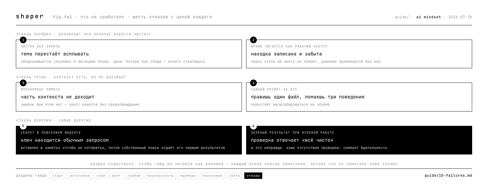
продолжение раздела грабли, с той же схемой: симптом, причина, цена, решение. отличие в источнике — здесь то, что сломалось на системе, живущей с октября 2025, и цена посчитана.
раздел стоит прочитать до того, как начнёшь наводить порядок в собранном: большинство пунктов ниже относится к обслуживанию уже накопленного.
симптом. после наведения порядка тема перестаёт всплывать в работе. обнаруживается это случайно и месяцами позже.
причина. свёрнутый раздел выглядел завершённым нарративом, а был рабочим контуром с открытыми хвостами. глазами эти два состояния не различаются: и там, и там текст про уже сделанное.
цена. одна тема схлопнулась с восьми упоминаний до двух и фактически исчезла из работы. нашлась по совпадению, при разборе соседнего вопроса.
решение. замер тем до сжатия, замер после, сравнение списков. всё, что упало в ноль, обязано жить в другом месте. сворачивается завершённое, рабочее остаётся.
минимальная версия для человека без скриптов: перед чисткой выписать в столбик темы, которые папка закрывает. после чистки пройти по списку и проверить каждую.
симптом. находка записана, через сутки её никто не помнит, решения принимаются без неё.
причина. запись ушла в хранилище, которое в работе не открывается. ощущение «я это записал» есть, доступа нет.
цена. зафиксированная вечером деградация оборудования выпала из следующего дня и нашлась случайно.
решение. определить два-три места, которые открываются каждый рабочий заход. запись, не попавшая ни в одно, потеряна молча.
проверка та же, что для декоративной папки: если файл не открывался месяц, он не в рабочем контуре, чем бы он ни назывался.
симптом. часть контекста не доезжает до работы. ошибки при этом нет.
причина. у файла, который подгружается автоматически, есть жёсткий лимит размера. за лимитом хвост обрезается без предупреждения.
цифра. лимит 25 600 байт, текущий размер файла 22 797 — 89 процентов. до постановки сторожа факт обрезания обнаруживался через сессию, уже после потери.
решение. узнать лимиты своих инструментов и поставить проверку на приближение к ним. отсутствие ошибки работу не доказывает.
это относится к любому автоподгружаемому файлу: инструкции проекта, память, системный промпт. у каждого есть потолок, и о нём обычно не сообщают.
симптом. правишь один файл и ломаешь три поведения.
причина. в одном документе живут вещи с разным сроком жизни: то, что не меняется никогда, соседствует с тем, что меняется еженедельно. правка второго задевает первое.
цена. компактный документ, собранный в декабре, работал полгода. дальше каждая правка стала требовать проверки трёх несвязанных вещей.
решение. разделить по скорости изменения: неизменное · правила с проверками · рабочие заметки · история решений. держать компактным то, что читается каждый раз.
момент перехода узнаётся по симптому, а не по объёму: пока правка не задевает соседнее, делить рано.
симптом. ключ или пароль, однажды вставленный в заметку «чтобы не потерять», находится обычным поисковым запросом к собственной базе знаний.
причина. индекс не различает содержимое. он индексирует всё, что лежит в хранилище, и секрет становится таким же находимым фактом, как любой другой.
цена. замер на одной системе: 21 уникальный секрет в 28 файлах, из них 9 действующих. часть уже уехала в индекс и находилась запросом.
гоча, из-за которой чистка не удаётся с первого раза. порядок обязателен: сначала источник, потом индекс. убрал из заметок и оставил в индексе — следующая переиндексация ничего не исправит. убрал только из индекса — вернётся при ближайшем проходе по источнику.
второй урок. приватность репозитория не равна контролю доступа к секрету: хранилище синхронизируется на рабочий стол, в облачный диск, в клоны на других машинах. приватный флаг ни на что из этого не влияет.
решение. обнаружение и починка — разные задачи с разной срочностью. сначала убрать из хранилища и индекса, ротацию планировать отдельно: отзыв действующих ключей ломает работающее, и делать это в спешке дороже, чем по плану.
связанное — безопасность контекста.
симптом. проверка отвечает «всё чисто», и это неправда.
причина. проверка отработала на пустом входе: сравнивать было нечего, а результат выглядит как успех.
цена. три случая за один день. проверка на пустом наборе изменений. детектор, запущенный при недостижимой цели. счётчик, вернувший ноль на пустом входе, — его прочитали как «ноль проблем» и получили 39 ложных сообщений о неисправности.
решение. результат, ровно равный ожиданию при нулевой работе, считать красным флагом. спрашивать, что конкретно было прочитано, чтобы получить такой ответ.
различать «нет данных» и «ноль»: первое требует отдельного значения и не должно тихо превращаться во второе.
опыт по любому пункту ценнее ещё одного раздела от авторов — как добавить.